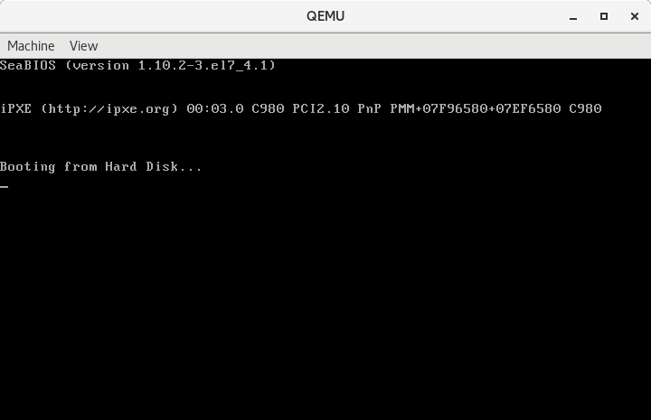
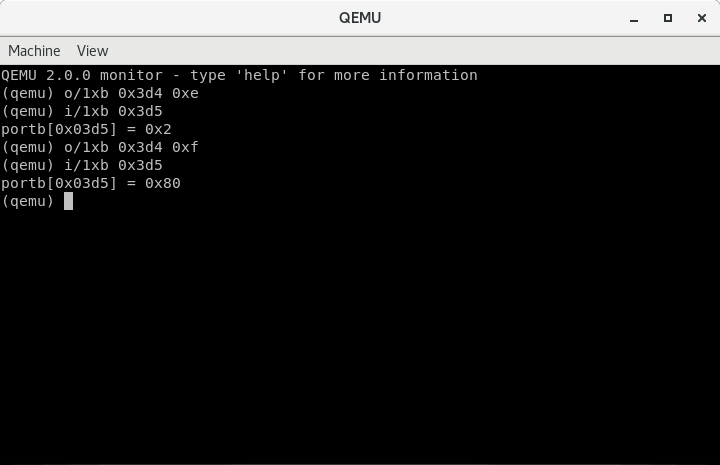
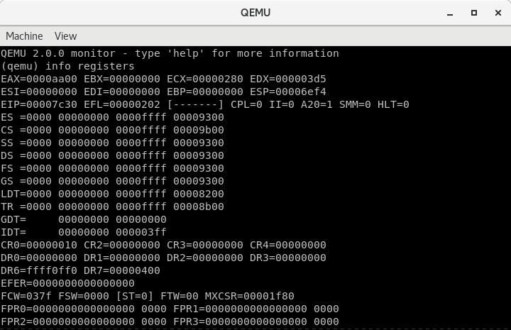

005-I/O接口技术
Contents
I/O接口用于CPU与外部I/O设备进行信息交换。例如与键盘、鼠标、打印机和显示等设备交互。I/O接口电路与总线系统看似很复杂，但是落实到汇编语言代码上实则是很简单的。下面简要介绍一下I/O接口技术。
I/O 接口技术
在计算机中，CPU与外设并不是直接相连的，在它们中间设有I/O接口电路。CPU通过数据总线、地址总线和控制总线与I/O接口电路相连，以实现与外设交换数据信息、状态信息和控制信息。外设的状态信息通过接口电路的状态端口经由数据总线进入CPU，而CPU向外设发出的控制信号也是经由数据总线，通过接口电路的控制端口来实现的。
I/O 端口
具体来说，CPU是通过I/O端口和外设交互的。I/O端口是接口电路中能被CPU直接访问的寄存器或存储器。通常，根据数据性质，I/O接口电路中可分为3种类型的端口，即数据端口、状态端口和控制端口。
-
数据端口。用于存放
CPU与外设之间交换的数据，数据的长度通常为1~2个字节。 -
状态端口。用于指示外设的当前状态。每种状态用
1位二进制数据表示，可由CPU通过数据总线和相关电路读取。状态端口的不同状态位的含义有：-
准备就绪位
(ready)。对于输入端口，ready=1表示数据寄存器已准备好数据，等待CPU读取；当数据取走后，此位由CPU清零；对于输出端口，ready=1表示输出数据寄存器已空，可以接受下一个数据；当新数据到达后，该位由外设清零。 -
忙位
(busy)。busy表明外设是否能够接收数据。busy=1表示外设忙，暂时不允许CPU送数据过来。busy=0表示外设已空闲，允许CPU发送下一个数据。 -
错误位
(error)。error=1表示在数据传送过程中出现错误，CPU正在进行相应的处理，重新传送或中止操作等。
-
-
控制端口。用于存放
CPU向接口发出的各种命令、控制字和控制信号，以便控制外设的不同操作。
I/O 端口的寻址方式
CPU对端口的寻址方式通常有两种：
- 存储器统一编址。又称为存储器映像编址，在这种编址方式中，
I/O端口和内存单元统一编址，即把I/O端口当作内存单元对待，从整个内存空间中划出一个子空间给I/O端口，每一个I/O端口分配一个地址码，用访问存储器的指令对I/O端口进行操作。典型的例子是我们一直在使用的显存缓冲区，虽然我们使用的是操作内存的方式，但实际上操作的是显卡。 I/O独立编址。I/O端口编址和存储器的编址相互独立，即I/O端口地址空间和存储器地址空间分开设置，互不影响。采用这种编址方式，对I/O端口的操作使用输入/输出指令（I/O指令）。
I/O 端口地址分配
| 端口地址范围 | 分配说明 |
|---|---|
| 0x000 — 0x01F | 8237A DMA控制器1 |
| 0x020 — 0x03F | 8259A可编程中断控制器1 |
| 0x040 — 0x05F | 8253/8254A 定时计数器 |
| 0x060 — 0x06F | 8042键盘控制器 |
| 0x070 — 0x07F | CMOS RAM/实时时钟RTC |
| 0x080 — 0x09F | DMA页面寄存器访问端口 |
| 0x0A0 — 0x0BF | 8259A可编程中断控制器2 |
| 0x0C0 — 0x0DF | 8237A DMA控制器2 |
| 0x0F0 — 0x0FF | 协处理器访问端口 |
| 0x170 — 0x177 | IDE硬盘控制器1 |
| 0x1F0 — 0x1F7 | IDE硬盘控制器0 |
| 0x278 — 0x27F | 并行打印机端口2 |
| 0x2F8 — 0x2FF | 串行控制器2 |
| 0x378 — 0x37F | 并行打印机端口1 |
| 0x3B0 — 0x3BF | 单色MDA显示控制器 |
| 0x3C0 — 0x3CF | 彩色CGA显示控制器 |
| 0x3D0 — 0x3DF | 彩色EGA/VGA显示控制器 |
| 0x3F0 — 0x3F7 | 软盘控制器 |
| 0x3F8 — 0x3FF | 串行控制器1 |
实验：屏幕光标控制
这一小节给大家介绍一下关于屏幕光标的一些知识，并借助QEMU提供的访问I/O端口的能力在不写代码的情况下体验一下I/O端口的操作。
我们从控制屏幕光标来学习I/O端口的操作，因为控制屏幕光标很简单，只需要操作两个端口即可。
在之前的学习中，我们知道了计算机启动后显卡默认被初始化到标准 VGA 文本模式，该模式下屏幕总共可以显示80 x 25 = 2000个字符。从0开始计数，光标的范围在数值上为0~1999。光标在屏幕上的位置保存在显卡内部的两个光标寄存器中，每个寄存器都是8位的，合起来形成一个16位的数值。这两个寄存器在显卡内部的索引值分别是14(0x0e)和15(0x0f)，分别用于提供光标位置的高8位和低8位。在读写这两个寄存器之前需要先通过索引寄存器指定它们的索引，索引寄存器的端口号是0x3d4。指定了寄存器之后，就可以通过数据端口0x3d5来进行读写了。
下面就让我们通过QEMU来体验一下如何操作I/O端口。配合这个实验的主引导扇区代码如下：
|
|
这段代码只有一个功能，就是陷入死循环。下面启动虚拟机：
|
|

可以看到光标的默认位置在B下方，我们通过端口将光标的实际位置取出来，看看和我们肉眼所见的位置一不一样。
通过Ctrl-Alt-2切换到监视器。
向索引寄存器的端口0x3d4写入0xe，因为我们接下来准备读取光标位置的高8位：
|
|
这是QEMU提供的读写I/O端口的命令，并不是汇编指令，这一点不要搞混。
从数据端口0x3d5读取光标位置高8位：
|
|
结果是0x2。
再用同样的方式读取光标位置低8位：
|
|
如图所示：

结果是0x80，将高8位与低8位组合在一起得到0x280，即十进制640，除以每行字符数80，得到8。即第8行，从0开始计。可能不太好数，我们来换个方式，把位置0写入到光标位置寄存器，看看光标会发生什么变化。
|
|
此时的结果如下：
可以看到光标已经在左上角的位置了。
上面用到的Qemu命令的格式我并没有解释，1xb分别代表什么请查看文档。
用汇编代码控制屏幕光标位置
下面我们使用汇编语言完成和上面一样的功能，当程序运行完成后，光标的初始位置被保存在cx中。
代码如下：
|
|
解释
第4~6行使用out指令将0xe写入端口0x3d4，用于设置要访问的寄存器的索引。out指令的格式是固定的，源操作数必须是寄存器al或者ax，目的操作数可以是8位立即数或者寄存器dx。因为目标端口是一个8位端口，所以使用al寄存器；因为端口号0x3d5大于0xff（8位立即数能表示的最大端口号），所以使用dx寄存器。
第8、9行从数据端口0x3d5读取数据到al。in指令的格式与out指令正好相反。
第10行将光标位置的高8位从al移动到ch，因为稍后还要使用al。
第12~18行用于读出光标位置的低8位并移动到cl中。此时cx中保存着光标完整的位置。
剩下的指令用于将光标位置的高8位和低8位分别置为0。
运行
|
|
结果与上面一致，就不贴图了。
此时我们查看寄存器的值：

内容比较多，我们只关注ecx，值为0x280。与我们之前手动取出来的值是一致的。